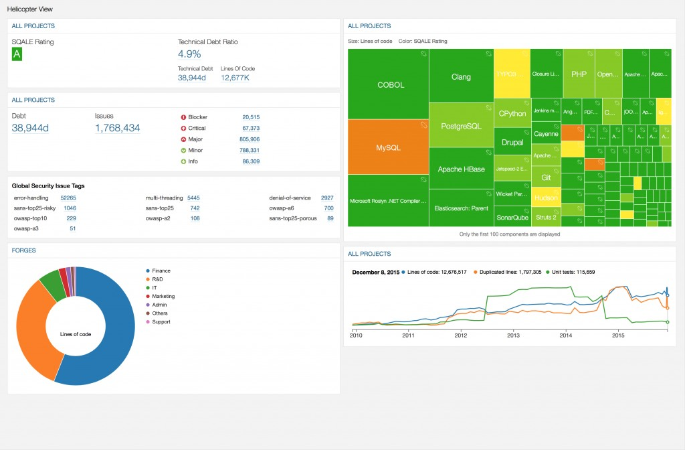

O que é Cultura DevOps ?
A Origem DevOps

The GodFather
Patrick Debois


... Uau um processo !!!!
Rotina DevOps

Etapas ou Ciclo de Vida

Integração Contínua

Jenkins

Integração Continua usando Docker

Inspeção contínua e qualidade do código
Iniciando os Testes

Sucesso
Ferramentas DevOps

Filosofia
DevOps é a maneira em que uma organização de tecnologia se incorpora em um negócio para o benefício desse negócio.